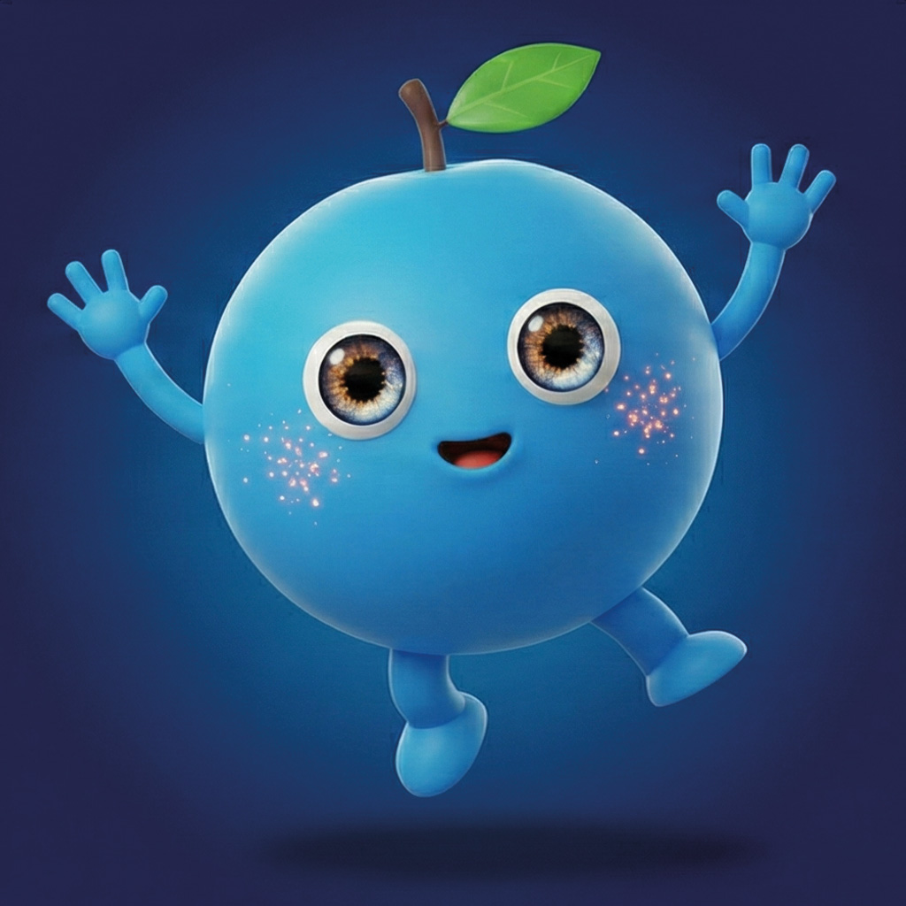
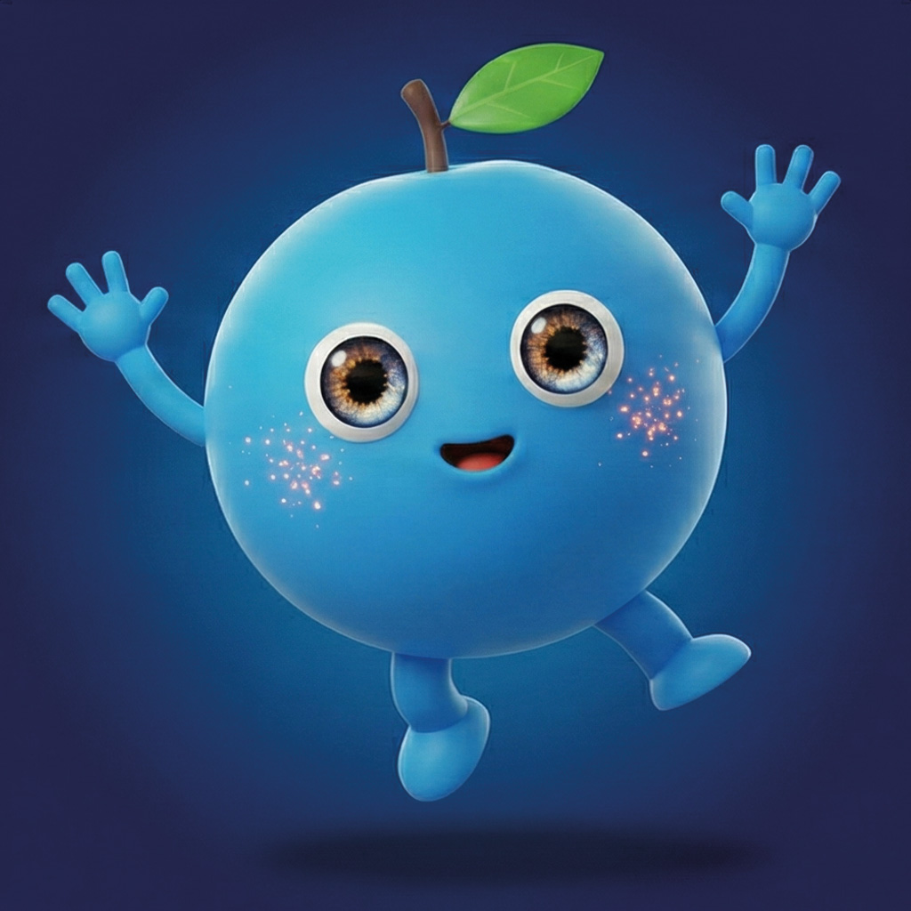
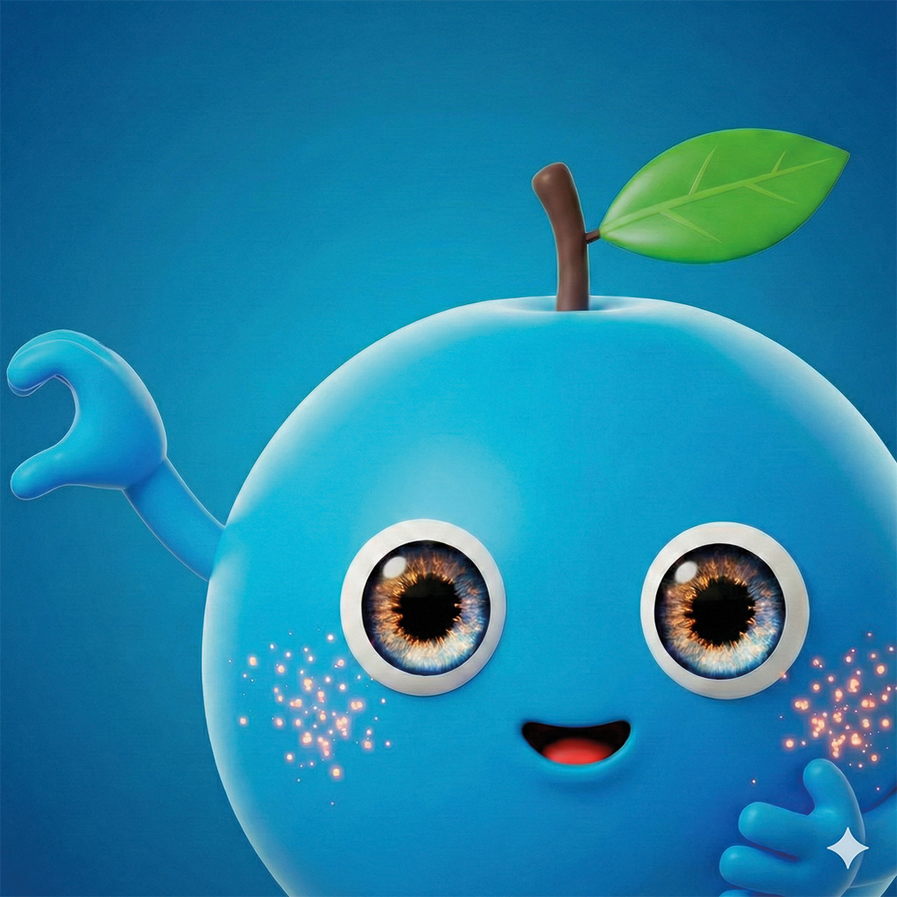
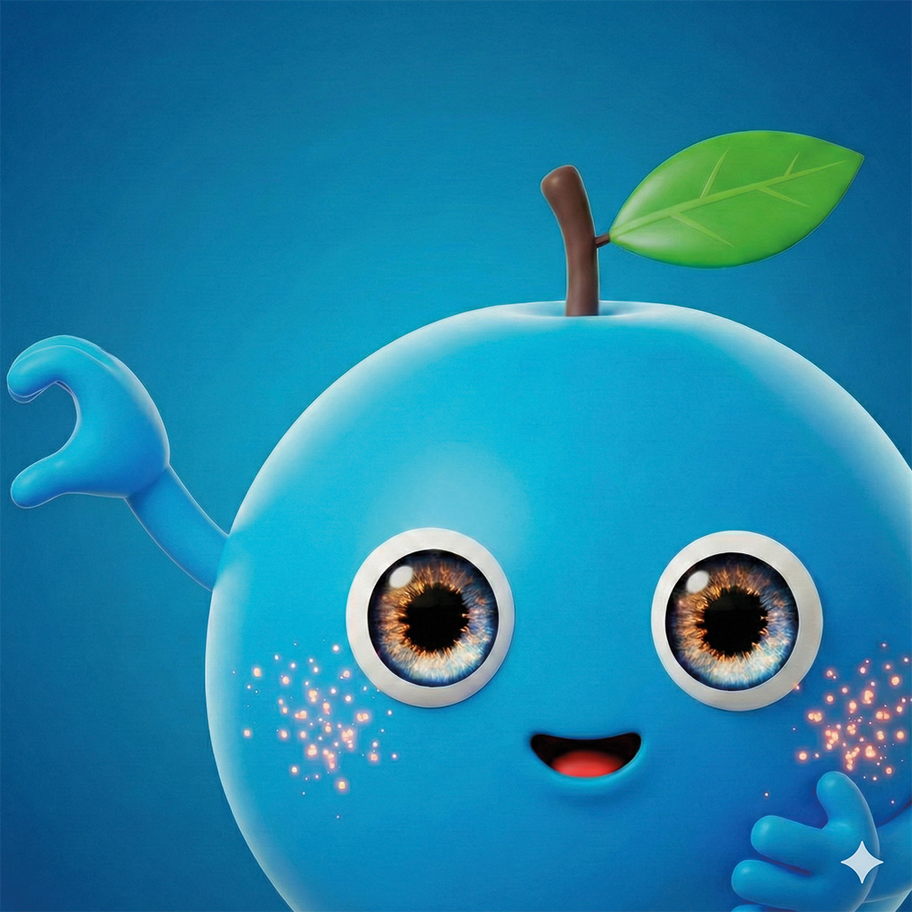

L'histoire de KYOOL
Tout commence par une nuit d'orage sur l'île de Jeju. Un mandarinier est frappé par la foudre…
Un mandarinier est frappé par la foudre. Une mandarine tombe de l'arbre, roule sur l'herbe, dévale la montagne, traverse des routes et manque de se faire écraser.
Elle traverse ensuite des champs où elle manque de se faire manger, tandis que des chiens lui courent après.
Après un grand saut en bas de la montagne, elle traverse la dernière route menant à la mer.
Au moment où elle touche l'eau, un nouvel éclair frappe la mandarine et la mer en même temps.
Alors que la nuit est noire et pluvieuse, une douce lueur bleue apparaît autour du point d'impact, illuminant l'obscurité et enveloppant la mandarine.
Ainsi est né KYOOL, la mandarine de Jeju.
Notre personnage est le seul « bleu », né de la rencontre entre la terre, la mer et la foudre. Nous le considérons comme le symbole de KYOOL : quelque chose né en Corée, transformé par l'expérience, et destiné à voyager, relier les cultures et faire la différence avec chaleur et curiosité.
KYOOL est né à Jeju… et il est prêt à voyager partout en Europe.
 



 
